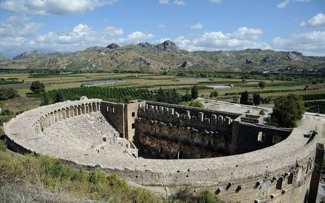

Roma tiyatrosunun en iyi korunmuş örneklerinden Aspendos, sütunlu caddeleriyle Perge ve deniz kenarındaki Side. Antalya Müzesi ile başlayan bu rota, kentin çevresindeki büyük antik yerleşimleri birleştirir.
Gün 1

Antalya Müzesi, Türkiye'nin en kapsamlı arkeoloji müzelerinden biridir ve Pamfilya, Likya ve Pisidya bölgelerinin hazinelerini bir araya getirir.

Antalya Etnografya Müzesi, Toroslar'dan kıyıya uzanan bu bölgenin yakın geçmişteki gündelik yaşamını tanıtır.

Termessos, Antalya'nın kuzeybatısında, Güllük Dağı'nın yüksek ve sarp yamaçlarına kurulmuş, doğanın neredeyse tamamen içine gömülmüş bir Pisidya kentidir.

Karain Mağarası, Antalya'nın kuzeyinde, Katran Dağı'nın eteklerinde yer alan ve Türkiye'nin en önemli tarih öncesi yerleşimlerinden biri kabul edilen büyük bir mağaradır.
Gün 2

Perge, Pamfilya ovasının en görkemli kentlerinden biriydi ve Antalya'ya yakınlığı sayesinde kolayca ziyaret edilebilir.

Aspendos, Köprüçay'ın (antik Eurymedon) kıyısında kurulmuş bir Pamfilya kentidir ve antik dünyanın en iyi korunmuş tiyatrolarından birine sahiptir.

Side, denize uzanan dar bir yarımadanın üzerine kurulmuş ve bugün antik kalıntılarla modern tatil kasabasının iç içe yaşadığı özel bir yerdir.

Side Müzesi, antik Side kentinin ortasında, Roma döneminden kalma bir hamam yapısının içinde yer alır; yani ziyaretçi, eserleri antik bir binanın taş duvarları arasında…
Gezinizi planlamanıza yardımcı olacak, gün gün düzenlenmiş hazır rotalar. Süreler yaklaşık değerlerdir; ziyaret saatlerini ve yol koşullarını yola çıkmadan önce kontrol edin.